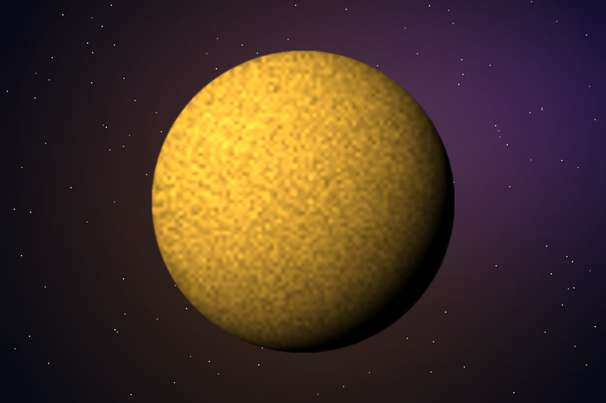
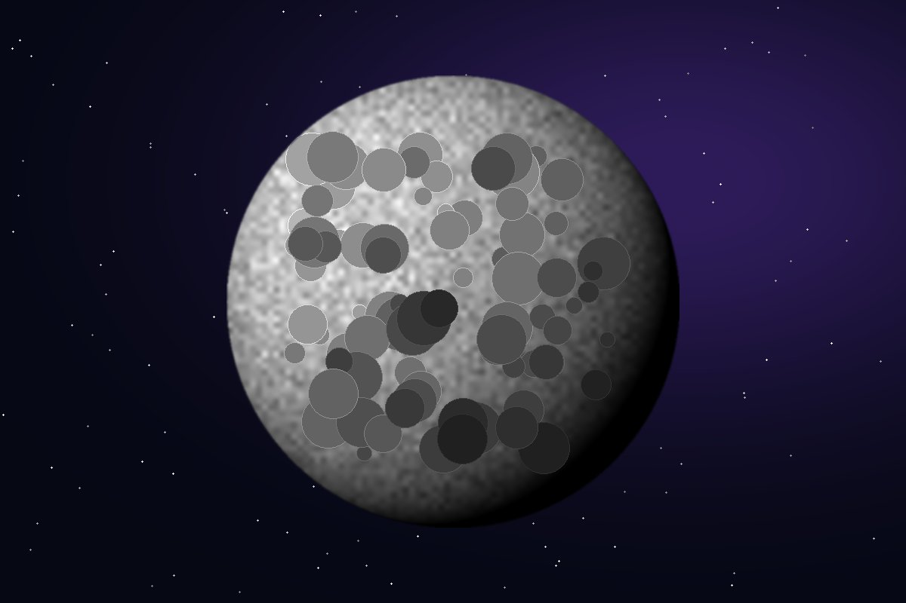
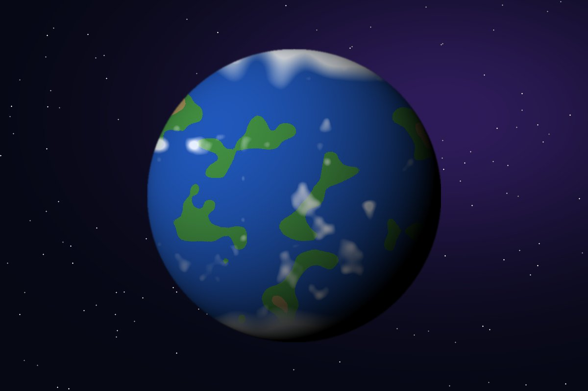

El Sol y la Luna
Nuestra estrella y nuestro satélite natural

El Sol
El Sol es una estrella de tipo enana amarilla y contiene el 99.8% de toda la masa del Sistema Solar. En su centro se fusionan átomos de hidrógeno para formar helio, y en ese proceso se libera la energía que llega a la Tierra como luz y calor. La luz del Sol tarda alrededor de 8 minutos en llegar hasta nosotros.

La Luna
La Luna es el único satélite natural de la Tierra y está a unos 384,400 km de distancia. Siempre nos muestra la misma cara porque tarda lo mismo en girar sobre sí misma que en darle la vuelta a la Tierra. Sus cráteres se formaron por el choque de asteroides y, como casi no tiene atmósfera, se han conservado por millones de años.

¿Cómo nos afectan?
Gracias al Sol existen las estaciones del año, el clima y la fotosíntesis de las plantas. La Luna, por su parte, provoca las mareas con su fuerza de gravedad y ayuda a que el eje de la Tierra se mantenga estable. Cuando el Sol, la Tierra y la Luna se alinean ocurren los eclipses.